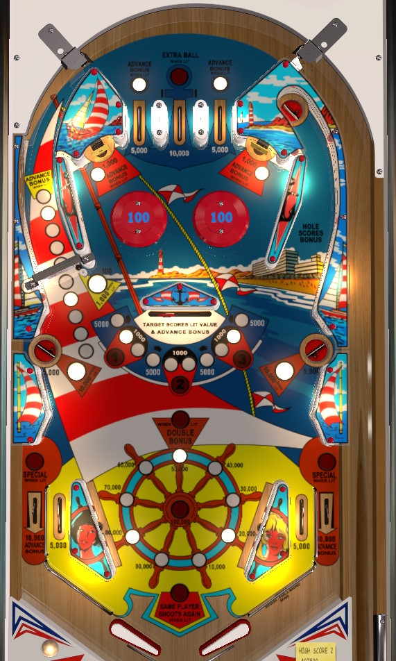

Monaco is simply a rerelease of Cannes. I have not been able to find any rules or scoring differences between the two.
From the right flipper, always shoot the spinner. From the left flipper, shoot the bonus collect saucer in the upper right if double bonus is NOT lit; if double bonus is lit, try to transfer the ball to the right flipper, or (if you can safely do so) shoot the swinging target. Hitting the swinging target when the lit in front of it is in the red zones will light the corresponding number in 1-2-3; getting 1 or 3 (or sometimes both are needed) lights double bonus, getting 2 lights extra ball, getting 1-2-3 lights specials.
The center top lane always scores 10,000 points and a bonus advance, and is lit for extra ball if #2 has been collected from the swinging target. The left and right top lanes score 5,000 points; one of the two will also be lit for a bonus advance, alternating any time something that scores 5,000 points is triggered.
Pop bumpers always score 100 points.
The two standup targets score 1,000 points, plus a bonus advance if lit; like the top lanes, one of these will be lit at a time, alternating on 5,000-point switch hits. Since these targets do not score 5,000 points themselves, you can earn a bonus advance from a target, and the same target will stay lit; with some pop bumper luck, you can quickly get 3 or 4 bonus advances in one trip down the table from this. Getting bonus advances from the standup targets isn't a strategy, but it can be a nice boon.
The light in front of the swinging target shows the target's current value: if the light is in one of the red areas, the swinging target scores 1,000 points and lights the corresponding 1-2-3 number, and if the light is in a blue area, the target scores 5,000 points. Any shot to the swinging target also scores a bonus advance. Hitting the swinging target itself, or advancing the bonus from anything in the game other than the out lanes, moves the swinging target light one position to the right. Its position is conserved across players and balls.
On easy settings, lighting #1 or #3 gives double bonus; on hard settings, both #1 and #3 are needed for double bonus. In either case, lighting double bonus also lights the left and right side saucers to award 10,000 points instead of 5,000. Lighting #2 at the swinging target lights the center top lane for extra ball. Lighting all of 1-2-3 at the swinging target lights the out lanes for special, alternating with 5,000-point switch hits.
The swinging target is a death trap, and should never be shot at directly due to the very high rate of center drains on the return feed. The double bonus can be tempting, but it is always safer in the long run to shoot a spinner of the upper right saucer.
Scores 100 points per spin. Every 10th spin awards a bonus advance. If the base bonus is currently maxed out at 100,000 points, the spinner is worth 1,000 per spin instead. The spinner is the most important shot in the game to find and master.
The upper right saucer is always available as a bonus collect. Collecting the bonus mid-ball resets the base bonus back to 10,000 points. The mid-ball bonus collect does NOT score double if double bonus is lit. For this reason, if you have a high bonus and double bonus is lit, do not shoot the bonus collect. Consider: if you have 2x 100,000 bonus ready, and you shoot the collect but drain right away, you got 100,000 from the collect and 2x 10,000 from the drain; that total of 120,000 points is significantly less than if you had just drained with the 2x 100,000 straight away. The collect bonus saucer is the go-to left flipper shot with single bonus, but with double bonus, you're better off transferring to the right flipper for a spinner shot, unless you're very confident that you can get the bonus back up to its current value before draining.
Monaco has a conventional in/out lane setup. In lanes score 5,000 points. Out lanes score 10,000 points and a bonus advance, and are lit alternately for special if 1-2-3 are all lit at the swinging target.
Bonus is advanced by the center top lane, the left or right top lane when lit, the upper standup targets when lit, every 10th spin of the spinner, the swinging target, and any out lane. Each bonus advance is worth 10,000 points in bonus, unlike many other games of the era where each bonus advance is 1,000. Max base bonus is 100,000 points. Double bonus is available on any ball by collecting the #1 or #3 from the swinging target (or both, if the game is on hard settings). Base bonus and multiplier can never be carried from ball to ball. The upper right saucer collects the bonus, but resets the base bonus to 10,000 afterward and ignores the double bonus multiplier, meaning it is only valuable if double bonus is not lit.